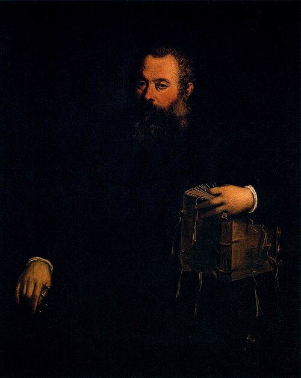
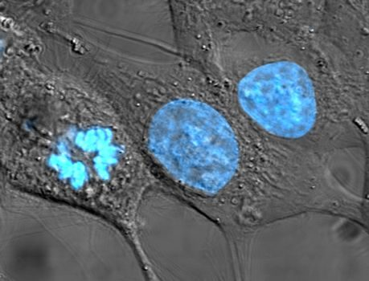
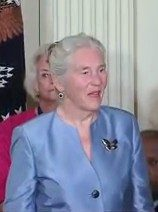
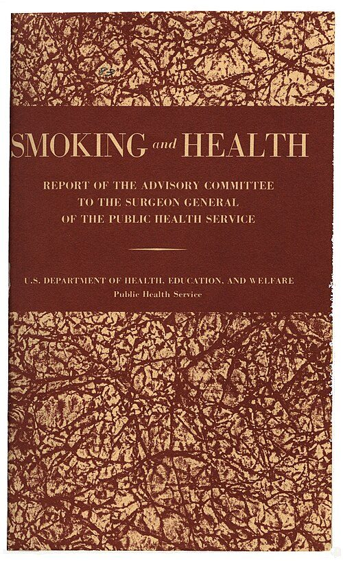

Toca un punto para ir al hito, o filtra por época.
Imagen: Jeff Dahl · Dominio público · Wikimedia Commonsc. 1600 a. C.
El papiro de Edwin Smith
Un texto médico egipcio describe tumores abultados de la mama y concluye: «no hay tratamiento».
Leer más
Es una copia de textos aún más antiguos, quizá de hacia 3000 a. C. Entre 48 casos de traumatología aparece la primera descripción conocida de lo que probablemente era un cáncer de mama. El autor distingue estos bultos fríos y duros de los abscesos, y reconoce que no sabe curarlos. Durante milenios esa frase resumió la medicina del cáncer.
c. 1550 a. C.
El papiro Ebers
Otro papiro egipcio, uno de los textos médicos más largos de la Antigüedad, describe tumores y propone extirpar algunos con cuchillo y cauterizar otros.
Leer más
Distingue bultos que pueden operarse de otros que es mejor no tocar, una prudencia que se repetirá durante siglos. Muchas de sus recetas eran ungüentos y ritos, pero muestra que los médicos egipcios ya observaban con cuidado los tumores.
Los médicos hipocráticos llaman karkinos (cangrejo) a ciertos tumores, por los vasos que se extienden a su alrededor como patas.
Leer más
De esa palabra griega vienen «carcinoma» y, a través del latín cancer, nuestra palabra cáncer. Siglos después, Celso tradujo el término al latín y Galeno usó oncos (hinchazón, masa), el origen de «oncología». La explicación de la época era humoral: un exceso de bilis negra.
El médico griego Galeno, en Roma, atribuye el cáncer a un exceso de bilis negra, una de los cuatro humores.
Leer más
Su autoridad fue tan grande que la teoría de la bilis negra dominó la medicina europea y árabe durante más de 1.300 años. Galeno usó la palabra oncos (hinchazón), de la que deriva oncología, y desaconsejaba operar los tumores avanzados.
c. 1000
Abulcasis y la cirugía del cáncer
El cirujano andalusí Abulcasis (al-Zahrawi), en Córdoba, describe en su enciclopedia la extirpación de tumores de mama y de otras zonas.
Leer más
Su obra Al-Tasrif, traducida al latín, se usó en las universidades europeas durante siglos. Recomendaba extirpar los tumores pequeños por completo y cauterizar, y advertía de que los grandes y fijos no debían tocarse.

Imagen: Workshop of Titian · Dominio público · Wikimedia Commons1543
Vesalio no encuentra la bilis negra
Andrés Vesalio publica De humani corporis fabrica, el primer gran atlas de anatomía basado en la disección de cadáveres humanos.
Leer más
Al abrir cuerpos, los anatomistas no encontraron la bilis negra que, según Galeno, causaba el cáncer. Fue el principio del fin de la teoría humoral, aunque tardaría dos siglos más en abandonarse.
El médico italiano Bernardino Ramazzini observa que las monjas tienen más cáncer de mama y menos de cuello uterino que otras mujeres.
Leer más
Lo relacionó con su forma de vida célibe. Hoy sabemos que no tener hijos aumenta el riesgo de cáncer de mama y que el cáncer de cuello uterino lo causa el VPH, de transmisión sexual. Ramazzini es considerado el padre de la medicina del trabajo.
1740
El primer hospital del cáncer
En Reims (Francia) se abre el primer hospital dedicado solo a pacientes con cáncer, gracias al legado del canónigo Jean Godinot.
Leer más
Tuvo que trasladarse a las afueras de la ciudad porque muchos vecinos creían que el cáncer era contagioso. La idea de centros especializados se extendió en el siglo XIX, con hospitales como el Royal Marsden de Londres (1851).
1761
Morgagni y la autopsia
Giovanni Battista Morgagni relaciona los síntomas de los pacientes con lo que encuentra en sus órganos tras la muerte.
Leer más
De sedibus et causis morborum recoge cientos de autopsias. Fue un cambio de mirada: la enfermedad tiene un lugar en el cuerpo. Sin esa idea no habría habido cirugía oncológica ni anatomía patológica.
1761
John Hill y el rapé
El médico londinense John Hill relaciona el consumo de rapé (tabaco en polvo para inhalar) con tumores de la nariz.
Leer más
Es la primera advertencia publicada de que el tabaco puede causar cáncer, casi dos siglos antes de los estudios de Doll y Hill sobre el cigarrillo y el cáncer de pulmón.
Un cirujano de Londres relaciona el hollín con el cáncer de escroto de los deshollinadores: la primera causa ambiental descrita.
Leer más
Los deshollinadores empezaban a trabajar de niños, subidos por chimeneas estrechas, y el hollín se acumulaba en su piel durante años. Pott describió el cáncer de escroto que aparecía en ellos de jóvenes. Fue la primera vez que un cáncer se asoció a una exposición profesional, y la base de la prevención. Percivall Pott.
1829
Nace la palabra «metástasis»
El ginecólogo francés Joseph Récamier usa por primera vez el término metástasis para describir la extensión del cáncer a otros órganos.
Leer más
Récamier describió la invasión del cerebro por un cáncer de mama. Durante el siglo XIX se discutió si las metástasis viajaban por la sangre, por la linfa o surgían en el sitio, y la respuesta definitiva llegó con el microscopio.
El patólogo británico Thomas Hodgkin describe siete pacientes con ganglios y bazo aumentados de tamaño: la primera descripción del linfoma que lleva su nombre.
Leer más
En 1865 Samuel Wilks rescató su trabajo y lo llamó enfermedad de Hodgkin. Más de un siglo después, el linfoma de Hodgkin sería uno de los primeros cánceres avanzados en curarse con quimioterapia.
1846-1867
Anestesia y antisepsia
La anestesia con éter (1846) y la antisepsia de Joseph Lister (1867) hacen posibles operaciones largas y seguras.
Leer más
Antes, la cirugía era rápida, dolorosa y con un riesgo enorme de infección. Gracias a estos avances, los cirujanos pudieron extirpar tumores internos por primera vez, y nació la cirugía oncológica moderna.
Rudolf Virchow publica su Patología celular: los tumores están formados por células que proceden de células del propio cuerpo.
Leer más
Johannes Müller había mostrado en 1838 que los tumores estaban hechos de células. Virchow lo llevó más lejos con su lema omnis cellula e cellula. El microscopio se convirtió en la herramienta para diagnosticar el cáncer, como sigue siendo hoy.
1881
Billroth extirpa un cáncer de estómago
El cirujano austriaco Theodor Billroth realiza en Viena la primera gastrectomía con éxito en una paciente con cáncer de estómago.
Leer más
Billroth también hizo las primeras extirpaciones de esófago y laringe. Su escuela formó a muchos de los grandes cirujanos de la época y demostró que la cirugía podía curar algunos cánceres internos.
El cirujano inglés Stephen Paget estudia 735 autopsias de cáncer de mama y propone que las metástasis dependen de la «semilla» y del «suelo».
Leer más
Observó que las metástasis no se reparten al azar: prefieren ciertos órganos, como el hueso o el hígado. Su teoría sigue vigente y es la base de la investigación actual sobre cómo las células tumorales colonizan otros tejidos.
Imagen: John H. Stocksdale · Dominio público · Wikimedia Commons1894
Halsted y la mastectomía radical
William Halsted publica sus resultados con una cirugía muy extensa para el cáncer de mama, que dominará la práctica durante 80 años.
Leer más
La idea era que el cáncer se extendía de forma ordenada desde la mama hacia los ganglios, y que quitar mucho tejido lo cortaba de raíz. La operación salvó vidas cuando el diagnóstico era tardío, pero causaba secuelas importantes. Los ensayos de Bernard Fisher demostraron después que cirugías menores con radioterapia daban los mismos resultados.
Imagen: Wilhelm Röntgen · Dominio público · Wikimedia Commons1895-1896
Los rayos X y la primera radioterapia
Wilhelm Röntgen descubre los rayos X, y en pocos meses varios médicos los usan para tratar tumores.
Leer más
Muy pronto se vio que la radiación podía destruir tejidos, y también que dañaba a quienes la manejaban sin protección. La radioterapia nació así, entre el entusiasmo y las quemaduras, mucho antes de que se entendiera su biología.
1896
Beatson y la primera hormonoterapia
El cirujano escocés George Beatson extirpa los ovarios a mujeres con cáncer de mama avanzado y observa que algunos tumores se reducen.
Leer más
Aún no se conocían los estrógenos. Fue la primera prueba de que las hormonas influyen en el crecimiento de algunos cánceres, y el precedente del tamoxifeno y los inhibidores de la aromatasa.
El descubrimiento del polonio y del radio abre el camino a la curieterapia, la radioterapia con fuentes radiactivas.
Leer más
Marie Curie recibió el Nobel de Física en 1903, con Pierre Curie y Henri Becquerel, y el de Química en 1911. El Instituto del Radio de París, fundado con su impulso, fue uno de los grandes centros de radioterapia del siglo XX. Marie Curie.
1911
Peyton Rous y un virus que causa cáncer
Rous demuestra que un sarcoma de pollo se transmite con un filtrado sin células: lo causa un virus.
Leer más
Durante décadas se consideró una rareza de las aves. El hallazgo fue clave para descubrir los oncogenes, y Rous recibió el Nobel en 1966, 55 años después.
1914
Boveri y los cromosomas
Theodor Boveri propone que el cáncer nace de una célula con una dotación anormal de cromosomas.
Leer más
Lo dedujo estudiando embriones de erizo de mar, sin poder verlo en tumores humanos. Su hipótesis anticipó la idea moderna del cáncer como una enfermedad del genoma de la célula.
1915
El alquitrán y las orejas de conejo
Katsusaburo Yamagiwa y Koichi Ichikawa, en Tokio, provocan cáncer de piel pintando con alquitrán las orejas de conejos durante meses.
Leer más
Era la primera vez que se producía cáncer en el laboratorio con una sustancia química, y confirmaba la observación de Pott sobre el hollín. Abrió el estudio de los carcinógenos químicos, como los del humo del tabaco.
1926
Un Nobel equivocado
Johannes Fibiger recibe el Premio Nobel por demostrar que un gusano parásito causa cáncer de estómago en las ratas.
Leer más
Años después se vio que los tumores probablemente se debían a una carencia de vitamina A y no al parásito. Es un recordatorio de que la ciencia avanza también corrigiendo sus errores.
George Papanicolaou presenta un método para ver células cancerosas en muestras del cuello del útero.
Leer más
Tardó en aceptarse: su monografía con Herbert Traut, de 1943, convenció a la comunidad médica. La citología permitió detectar lesiones precancerosas y redujo de forma drástica la mortalidad por cáncer de cuello uterino donde se organizó el cribado. George Papanicolaou.
1937
Nace el Instituto Nacional del Cáncer
Estados Unidos crea el Instituto Nacional del Cáncer (NCI), con una ley aprobada por unanimidad en el Congreso.
Leer más
Fue la primera gran agencia pública dedicada a investigar el cáncer. Hoy es el mayor financiador de investigación oncológica del mundo y edita la información PDQ que usamos como fuente en Oncolopedia.
Charles Huggins demuestra que la castración o los estrógenos frenan el cáncer de próstata metastásico.
Leer más
Fue la primera vez que un cáncer avanzado se controlaba con un tratamiento sistémico. Le valió el Premio Nobel en 1966 y es la base de la hormonoterapia actual.
1942-1946
De un gas de guerra al primer quimioterápico
En Yale, Louis Goodman y Alfred Gilman tratan a un paciente con linfoma con mostaza nitrogenada, derivada del gas mostaza.
Leer más
Se había observado que los soldados expuestos al gas mostaza tenían muy pocos glóbulos blancos. Si destruía células de la sangre, quizá podía destruir células de un linfoma. El tumor se redujo durante semanas. Los resultados se publicaron en 1946, tras el secreto militar.
Farber consigue las primeras remisiones temporales de leucemia infantil con aminopterina, un antifolato.
Leer más
Hasta entonces la leucemia aguda de los niños mataba en semanas. Las remisiones duraron poco, pero demostraron que un fármaco podía hacer retroceder un cáncer. Hoy, la mayoría de los niños con leucemia linfoblástica aguda se curan. Sidney Farber.
1950
El tabaco y el cáncer de pulmón
Richard Doll y Austin Bradford Hill, y en paralelo Ernst Wynder y Evarts Graham, demuestran la relación entre fumar y el cáncer de pulmón.
Leer más
El estudio de casos y controles de Doll y Hill se completó con el seguimiento de miles de médicos británicos a partir de 1951. Es una de las bases de la epidemiología moderna y de la mayor medida de prevención del cáncer: no fumar.

Imagen: TenOfAllTrades at English Wikipedia · Dominio público · Wikimedia Commons1951
Las células HeLa
Se obtienen, sin su consentimiento, células del cáncer de cuello uterino de Henrietta Lacks: las primeras células humanas que viven indefinidamente en el laboratorio.
Leer más
Las células HeLa sirvieron para la vacuna de la polio, para estudiar el cáncer y miles de fármacos y para entender el VPH. Su historia transformó el debate sobre el consentimiento informado.
James Watson y Francis Crick, a partir de los datos de Rosalind Franklin y Maurice Wilkins, describen la estructura en doble hélice del ADN.
Leer más
Entender cómo se copia el ADN permitió explicar qué es una mutación y, con los años, cómo las mutaciones acumuladas convierten una célula normal en cancerosa.
1956
La primera curación con quimioterapia
Min Chiu Li y Roy Hertz curan con metotrexato a mujeres con coriocarcinoma metastásico, un tumor de la placenta.
Leer más
Fue la primera vez que un tumor sólido con metástasis se curaba solo con fármacos. Li también enseñó a seguir el tratamiento hasta que desapareciera el marcador en sangre, la hCG, aunque el tumor ya no se viera.
1957
El primer trasplante de médula
E. Donnall Thomas realiza en Nueva York los primeros trasplantes de médula ósea en pacientes con leucemia.
Leer más
Los primeros intentos fracasaron, pero en los años setenta el trasplante se convirtió en una opción de curación para leucemias y linfomas. Thomas recibió el Premio Nobel en 1990.

Imagen: U.S. federal government · Dominio público · Wikimedia Commons1960
El cromosoma Filadelfia
Peter Nowell y David Hungerford descubren un cromosoma anormalmente pequeño en la leucemia mieloide crónica.
Leer más
Fue la primera alteración genética asociada de forma constante a un cáncer. En 1973 Janet Rowley mostró que era una translocación, y en los ochenta se identificó el gen de fusión BCR-ABL, la diana del imatinib.
Imagen: National Cancer Institute · Dominio público · Wikimedia Commons1963
El primer ensayo de cribado con mamografía
En Nueva York empieza el ensayo HIP, el primero que demuestra que la mamografía y la exploración reducen las muertes por cáncer de mama.
Leer más
Participaron unas 62.000 mujeres. Los ensayos posteriores en Suecia y otros países confirmaron el beneficio y llevaron a los programas de cribado poblacional que hoy existen en España.

Imagen: United States Public Health Service, Office of the Surgeon General; Surgeon General's Advisory Committee on Smoking and · Dominio público · Wikimedia Commons1964
El informe del Surgeon General
El jefe de Sanidad de Estados Unidos, Luther Terry, publica un informe oficial que concluye que fumar cigarrillos causa cáncer de pulmón.
Leer más
Se presentó un sábado para no hundir la bolsa. Fue el comienzo de las advertencias en las cajetillas, las restricciones a la publicidad y la caída del tabaquismo, que ha evitado millones de muertes.
1965
Nace la IARC
La Organización Mundial de la Salud crea en Lyon la Agencia Internacional de Investigación sobre el Cáncer.
Leer más
La IARC clasifica qué agentes causan cáncer en sus Monografías, coordina el Observatorio Mundial del Cáncer (GLOBOCAN) y publica la clasificación de tumores de la OMS y el Código Europeo contra el Cáncer.
Cicely Saunders abre en Londres el St Christopher's Hospice, el primer centro moderno de cuidados paliativos.
Leer más
Introdujo el concepto de «dolor total», físico, emocional, social y espiritual, y la morfina oral a horas fijas. Su modelo se extendió por todo el mundo.
1970
El linfoma de Hodgkin se cura
Vincent DeVita y su equipo del NCI publican que la combinación MOPP cura a muchos pacientes con linfoma de Hodgkin avanzado.
Leer más
Era la prueba de que la quimioterapia combinada podía curar un cáncer avanzado en adultos. El mismo principio se aplicó después a muchos otros tumores.
Imagen: Linda Bartlett (Photographer) · Dominio público · Wikimedia Commons1971
La «guerra contra el cáncer» y la angiogénesis
Estados Unidos aprueba la National Cancer Act. Ese mismo año, Judah Folkman propone tratar los tumores impidiendo que formen vasos sanguíneos.
Leer más
La ley multiplicó la financiación de la investigación. La idea de Folkman, recibida con escepticismo, condujo décadas después a fármacos antiangiogénicos como el bevacizumab. Judah Folkman.
Se hace en Londres la primera tomografía computarizada a una paciente, que muestra un tumor cerebral.
Leer más
Godfrey Hounsfield la desarrolló en la empresa EMI, la misma de los discos de los Beatles. El TAC, y después la resonancia y el PET, cambiaron el diagnóstico y la estadificación del cáncer. Hounsfield y Allan Cormack recibieron el Nobel en 1979.
1971
La teoría de los dos golpes
Alfred Knudson propone, estudiando el retinoblastoma, que hacen falta dos mutaciones para que se forme el tumor.
Leer más
En los niños con la forma hereditaria, la primera mutación viene de nacimiento y basta un golpe más. Esta idea llevó a descubrir los genes supresores de tumores, empezando por RB1 en 1986.
Imagen: Matthew Septimus (Photographer) · Dominio público · Wikimedia Commons1976
Oncogenes y quimioterapia adyuvante
J. Michael Bishop y Harold Varmus muestran que los oncogenes son genes normales de nuestras células. Gianni Bonadonna publica el ensayo de quimioterapia adyuvante en cáncer de mama.
Leer más
Los oncogenes no venían de fuera: estaban en nuestro genoma y causaban cáncer al alterarse (Nobel de 1989). En Milán, Bonadonna demostró que dar quimioterapia tras la cirugía reducía las recaídas, una estrategia que hoy salva muchas vidas.
Se aprueba el tamoxifeno para el cáncer de mama, el primer fármaco que bloquea el efecto de los estrógenos en el tumor.
Leer más
Había sido sintetizado en 1962 como posible anticonceptivo. Hoy, tomado durante años tras la cirugía, reduce mucho las recaídas de los cánceres de mama con receptores hormonales, y sigue en la lista de medicamentos esenciales de la OMS.
1978
El cisplatino cura el cáncer de testículo
Se aprueba el cisplatino. Combinado con otros fármacos, convierte el cáncer de testículo metastásico en una enfermedad curable en la mayoría de los casos.
Leer más
Barnett Rosenberg lo descubrió por casualidad en 1965, al ver que unas bacterias dejaban de dividirse cerca de unos electrodos de platino. Lawrence Einhorn demostró en 1977 la eficacia de la combinación con vinblastina y bleomicina.
1979
Se descubre p53
Varios grupos identifican la proteína p53, que años después se reconocerá como el «guardián del genoma».
Leer más
Al principio se pensó que era un oncogén. A finales de los ochenta se vio que era un gen supresor de tumores: frena la división de las células dañadas. Está alterado en alrededor de la mitad de los cánceres humanos.
1981
Una vacuna que previene un cáncer
Se aprueba la vacuna de la hepatitis B. Al prevenir la infección crónica, evita muchos casos de cáncer de hígado.
Leer más
Taiwán vacunó a todos los recién nacidos desde 1984, y en pocos años bajó el cáncer de hígado en niños. Fue la primera vacuna capaz de prevenir un cáncer, 25 años antes de la del VPH.
Los equipos de Mariano Barbacid, Robert Weinberg y Michael Wigler aíslan el oncogén RAS en un tumor de vejiga humano.
Leer más
Barbacid y su equipo identificaron además la mutación puntual que lo activa. Fue la primera prueba de que un único cambio en una letra del ADN podía contribuir a un cáncer humano. Mariano Barbacid.
Harald zur Hausen identifica los tipos 16 y 18 del VPH en tumores de cuello uterino.
Leer más
Permitió entender que este cáncer se debe casi siempre a una infección persistente, y llevó a las vacunas contra el VPH. Zur Hausen recibió el Nobel en 2008.
Bernard Fisher publica que la cirugía conservadora con radioterapia ofrece los mismos resultados que la mastectomía en muchos cánceres de mama.
Leer más
El ensayo NSABP B-06 cambió la idea de Halsted: el cáncer de mama podía ser una enfermedad sistémica desde el principio, y lo importante era tratarlo de forma integral, no quitar cada vez más tejido. Bernard Fisher.
1990
BRCA1 en el cromosoma 17
Mary-Claire King demuestra que un gen del cromosoma 17 causa cáncer de mama hereditario en muchas familias.
Leer más
El gen, BRCA1, se aisló en 1994. Su descubrimiento cambió el consejo genético y la prevención en las familias con mucho cáncer de mama y de ovario.
1993
Quitar pólipos previene el cáncer de colon
El National Polyp Study demuestra que extirpar los pólipos en la colonoscopia reduce mucho los cánceres colorrectales.
Leer más
Confirmó que la mayoría de cánceres de colon nacen de pólipos que tardan años en malignizarse. Es la base del cribado con sangre oculta en heces y colonoscopia.
1994-1995
BRCA1 y BRCA2
Se identifican los dos genes más conocidos del cáncer de mama y ovario hereditario.
Leer más
Mary-Claire King había localizado BRCA1 en el cromosoma 17 en 1990. Su identificación permitió ofrecer estudios genéticos, seguimiento y cirugías preventivas a las familias con mayor riesgo.
1997-1998
Los primeros anticuerpos monoclonales
Se aprueban el rituximab para el linfoma y el trastuzumab para el cáncer de mama HER2 positivo.
Leer más
Fueron los primeros tratamientos «dirigidos» de uso amplio: anticuerpos que reconocen una proteína concreta de las células tumorales. El trastuzumab cambió el pronóstico de un tipo de cáncer de mama especialmente agresivo.
2000
Los rasgos distintivos del cáncer
Douglas Hanahan y Robert Weinberg publican «The hallmarks of cancer», que resume en seis capacidades lo que hace a una célula cancerosa.
Leer más
Crecer sin señales, ignorar los frenos, evitar la muerte celular, dividirse sin límite, crear vasos y diseminarse. En 2011 añadieron otros, como escapar del sistema inmunitario. Es uno de los artículos más citados de la biología.
Se aprueba el imatinib para la leucemia mieloide crónica, un fármaco diseñado contra la proteína BCR-ABL.
Leer más
Brian Druker y sus colegas demostraron que bloquear una sola proteína alterada controlaba la enfermedad durante años con una pastilla diaria. Se convirtió en el modelo de la medicina de precisión. Brian Druker.
Imagen: Mikael Häggström, M.D. Author info - Reusing images- Conflicts of interest: None
Mikael Häggström, M.D.- The work integ · CC0 · Wikimedia Commons2003
El genoma humano
Se completa la secuencia del genoma humano, tras 13 años de trabajo internacional.
Leer más
Costó unos 3.000 millones de dólares. Hoy secuenciar el genoma de un tumor cuesta mucho menos y se hace en días, lo que permite buscar mutaciones tratables en cada paciente.
2004
Mutaciones de EGFR en el cáncer de pulmón
Tres grupos descubren que los pacientes con cáncer de pulmón que responden de forma espectacular al gefitinib tienen mutaciones en el gen EGFR.
Leer más
Fue el inicio del análisis molecular rutinario del cáncer de pulmón. Hoy se buscan EGFR, ALK, ROS1, KRAS y otras alteraciones con tratamientos dirigidos específicos.
Se aprueba la primera vacuna contra el virus del papiloma humano, que previene la mayoría de los cánceres de cuello uterino.
Leer más
En los países con buena cobertura ya se observa una gran reducción de las lesiones precancerosas y del cáncer de cuello uterino en las generaciones vacunadas. España vacuna a chicas y chicos.
2006
El Atlas del Genoma del Cáncer
Estados Unidos lanza The Cancer Genome Atlas (TCGA), que secuenciará más de 11.000 tumores de 33 tipos de cáncer.
Leer más
Sus datos, públicos, mostraron que tumores del mismo órgano pueden ser molecularmente muy distintos, y que tumores de órganos diferentes pueden compartir alteraciones.
Se aprueba el ipilimumab para el melanoma avanzado, el primer inhibidor de un punto de control inmunitario.
Leer más
James Allison había demostrado que bloquear CTLA-4 permitía a los linfocitos atacar tumores. En 2014 llegaron los anti-PD-1 nivolumab y pembrolizumab, basados en el descubrimiento de PD-1 por Tasuku Honjo. Ambos recibieron el Nobel en 2018. Allison y Honjo.
2015
La inmunoterapia y el melanoma de Jimmy Carter
El expresidente Jimmy Carter, con 90 años, anuncia que tiene metástasis cerebrales de un melanoma. Tras cirugía, radioterapia y pembrolizumab, el cáncer desaparece.
Leer más
Su caso dio a conocer la inmunoterapia al gran público. Antes de estos fármacos, el melanoma metastásico tenía una supervivencia de meses; hoy una parte importante de los pacientes vive muchos años.
Imagen: National Cancer Institute (NCI) · Dominio público · Wikimedia Commons2017
CAR-T y tratamientos «agnósticos»
Se aprueba la primera terapia CAR-T y, por primera vez, un fármaco contra el cáncer según una característica del tumor y no según su órgano de origen.
Leer más
Las CAR-T son linfocitos del propio paciente modificados en el laboratorio para reconocer las células malignas; la primera se autorizó para la leucemia linfoblástica aguda. Ese mismo año, el pembrolizumab se autorizó para tumores con inestabilidad de microsatélites, nacieran donde nacieran.
James Allison y Tasuku Honjo reciben el Premio Nobel de Medicina por descubrir cómo liberar los frenos del sistema inmunitario contra el cáncer.
Leer más
Allison estudió CTLA-4 y Honjo PD-1. Los fármacos que los bloquean se usan hoy en más de 20 tipos de cáncer.
2020
Eliminar el cáncer de cuello uterino
La OMS lanza una estrategia mundial para eliminar el cáncer de cuello uterino como problema de salud pública.
Leer más
Los objetivos para 2030 son el 90-70-90: el 90 % de las niñas vacunadas contra el VPH a los 15 años, el 70 % de las mujeres cribadas con una prueba de alta calidad a los 35 y 45 años, y el 90 % de las mujeres con lesiones o cáncer tratadas.
2021
Una diana «imposible»
Se aprueba el sotorasib, el primer fármaco contra la mutación G12C del gen KRAS, una diana que se consideraba imposible de atacar.
Leer más
KRAS es el oncogén mutado con más frecuencia en el cáncer humano, descubierto en 1982. Durante casi 40 años se intentó bloquearlo sin éxito.
2023
Vacunas de ARN personalizadas
Un ensayo muestra que una vacuna de ARN mensajero diseñada con las mutaciones del tumor de cada paciente, junto a pembrolizumab, reduce las recaídas del melanoma.
Leer más
La misma tecnología de las vacunas de la COVID-19 se aplica al cáncer. Se investiga en melanoma, páncreas, pulmón y otros tumores.
2024
20 millones de casos al año
La IARC publica las estimaciones GLOBOCAN 2022: unos 20 millones de casos nuevos y 9,7 millones de muertes por cáncer en el mundo.
Leer más
El cáncer de pulmón vuelve a ser el más frecuente, seguido del de mama, el colorrectal y el de próstata. La IARC calcula que los casos aumentarán mucho hacia 2050 por el envejecimiento y el crecimiento de la población, y que una gran parte se podría prevenir.
Fuentes
Mukherjee, S. (2011). El emperador de todos los males: una biografía del cáncer. Taurus.
DeVita, V. T. y Chu, E. (2008). A history of cancer chemotherapy. Cancer Research, 68(21), 8643–8653.
Hajdu, S. I. (2011). A note from history: landmarks in history of cancer, part 1. Cancer, 117(5), 1097–1102.
Doll, R. y Hill, A. B. (1950). Smoking and carcinoma of the lung. British Medical Journal, 2, 739–748.
Farber, S. et al. (1948). Temporary remissions in acute leukemia in children produced by folic acid antagonist, 4-aminopteroyl-glutamic acid. New England Journal of Medicine, 238, 787–793.
Fisher, B. et al. (1985). Five-year results of a randomized clinical trial comparing total mastectomy and segmental mastectomy with or without radiation. New England Journal of Medicine, 312, 665–673.
Bray, F. et al. (2024). Global cancer statistics 2022: GLOBOCAN estimates of incidence and mortality worldwide for 36 cancers in 185 countries. CA: A Cancer Journal for Clinicians, 74, 229–263.
The Nobel Prize. Premios de Fisiología o Medicina de 1966, 1989, 2008 y 2018. nobelprize.org.
Organización Mundial de la Salud (2020). Estrategia mundial para acelerar la eliminación del cáncer del cuello uterino.
Hanahan, D. y Weinberg, R. A. (2000). The hallmarks of cancer. Cell, 100(1), 57–70.
Li, M. C., Hertz, R. y Spencer, D. B. (1956). Effect of methotrexate therapy upon choriocarcinoma and chorioadenoma. Proceedings of the Society for Experimental Biology and Medicine, 93, 361–366.
Knudson, A. G. (1971). Mutation and cancer: statistical study of retinoblastoma. Proceedings of the National Academy of Sciences USA, 68(4), 820–823.
Paget, S. (1889). The distribution of secondary growths in cancer of the breast. The Lancet, 133(3421), 571–573.
U.S. Department of Health, Education, and Welfare (1964). Smoking and Health: Report of the Advisory Committee to the Surgeon General.
Hajdu, S. I. (2011-2012). A note from history: landmarks in history of cancer, partes 1 a 6. Cancer.
Texto: Alejandro Rosàs, médico de familia · Actualizado: 2026-11-24


_(by_George_Romney).jpg){kind=link}
,_physician_and_social_reformer._O_Wellcome_V0017897.jpg){kind=link}


.jpg){kind=link}

.jpg){kind=link}


_EM.jpg){kind=link}


.JPG){kind=link}

.jpg){kind=link}